A walk-through with screenshots. Plugin version 0.20.0 on Moodle 4.5 and 5.x, 31 October 2026.
The screenshots come from a demo course, Communication Skills 101: one teacher, eight students, one activity Presentations week 5 with a three-criterion rubric (Content, Delivery, Slides) and three reviews to give per student. Everything is shown as a teacher on a computer, then as a student on a 425 pixel wide phone.
What the activity is: students assess something that happened in the room, such as a talk. There are no submissions and no phases. The teacher decides who reviews whom, watches the reviews arrive, releases the feedback when ready, and sends the grades to the gradebook.
The teacher adds a Peer review activity to the course page like any other activity.
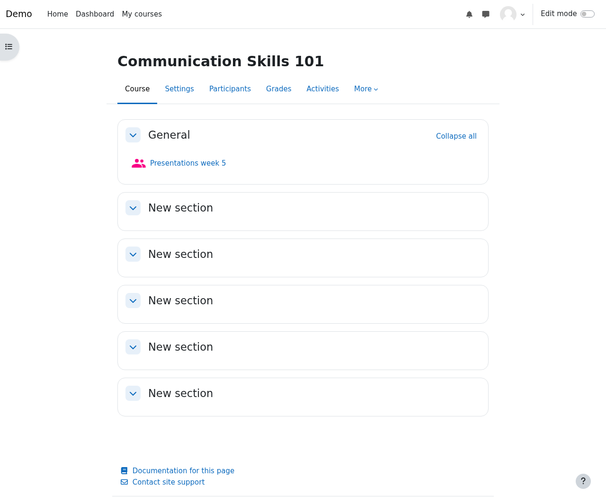
Peer review section: how received reviews are combined (mean or median), whether reviewers are shown to reviewees (anonymous by default), optional self-review, optional open and close dates and up to five automatic reminders before the close date.
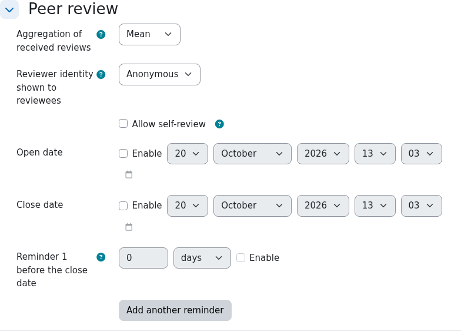
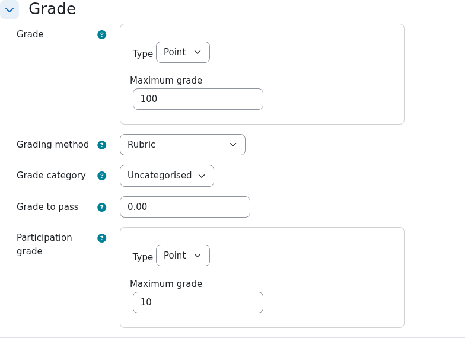
Grade section: the maximum grade (points or a scale), the grading method (Rubric, Marking guide or simple direct grading) and an optional participation grade for doing the reviews.
The teacher sees how many reviews are done, and the buttons Report, Allocate reviewers and Release feedback. Students cannot see the feedback they received until it is released.
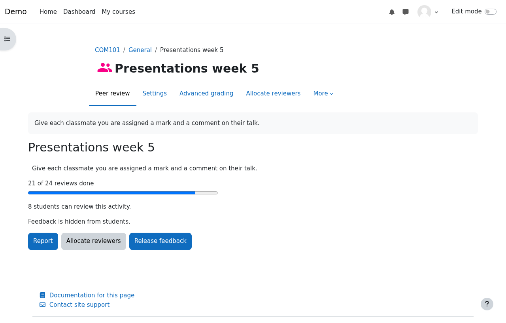
Under Advanced grading the teacher defines the rubric (or a marking guide) that reviewers will fill in. A rubric used before can be reused as a template.
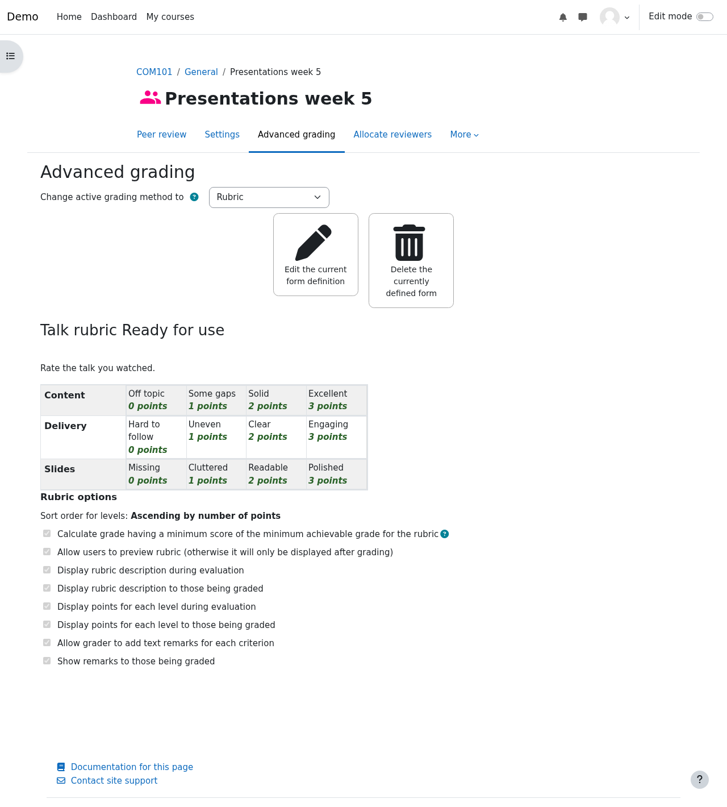
The Allocate reviewers page has a tab for each method: Manual, Random, Within group, Rotation, Self-assessment and CSV. Current allocations lists every pair; here 24 pairs exist (8 students × 3 reviews).
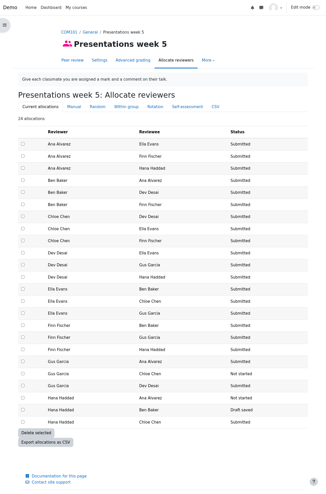
Every automatic method shows a preview first. Here Random with 4 reviews per student would add 8 allocations and keep the 22 that already have a saved or submitted review. Nothing is saved until the teacher presses Confirm and save. (This preview was not confirmed.)
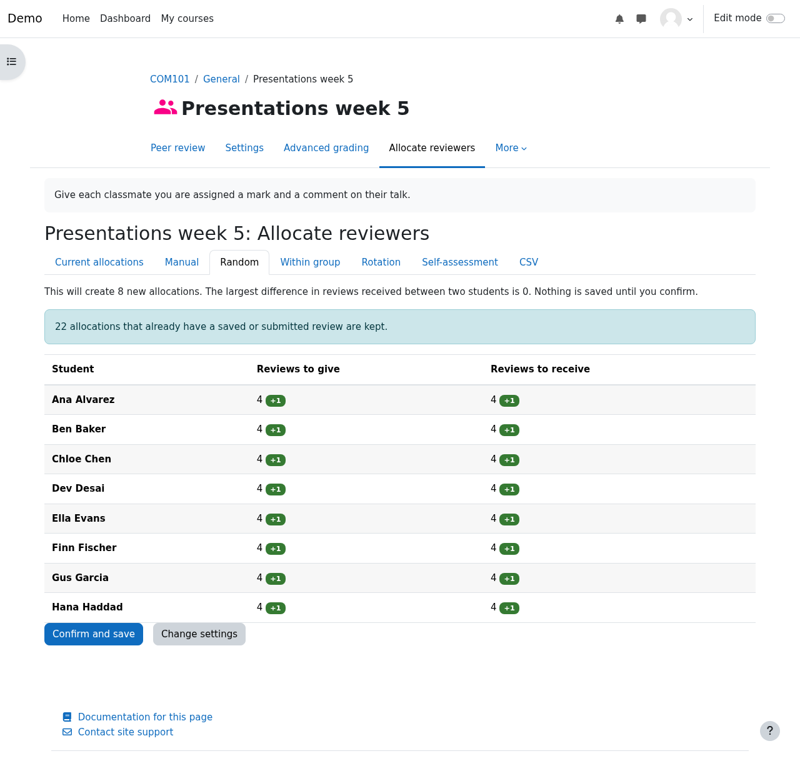
A student opens the activity and sees a card for every classmate they must review, with a progress bar. This student (Hana) has one review submitted, one draft and one not started. The review form shows the rubric, an Overall comment and the buttons Save draft and Submit review.
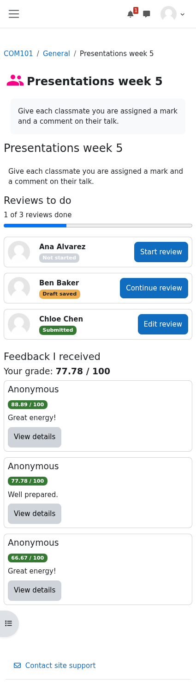
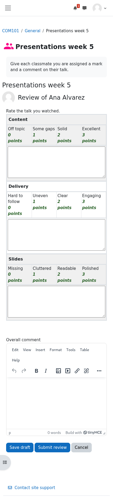
The report shows reviews given and received per student, the received grade and the participation share. It refreshes itself every 15 seconds. Average by criterion shows where the whole class was strong or weak. Gus (2 of 3 given) and Hana (1 of 3) still have reviews to do, which Remind students with reviews to do would nudge. The export offers CSV, Excel and other formats.
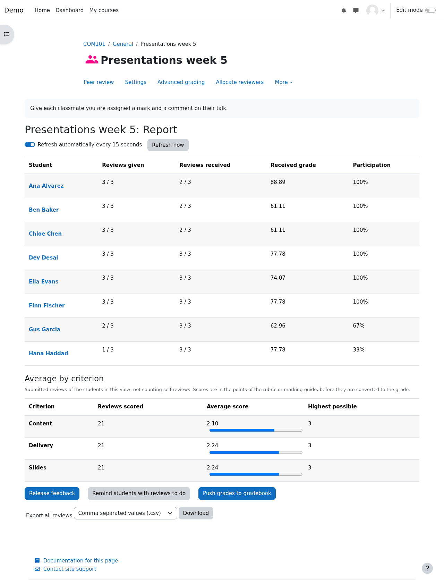
Clicking a student's name shows the reviews they received and gave, with the criterion scores and remarks. The teacher always sees who wrote what, even when reviewees see “Anonymous”. Here the teacher can also override the received grade with a note.
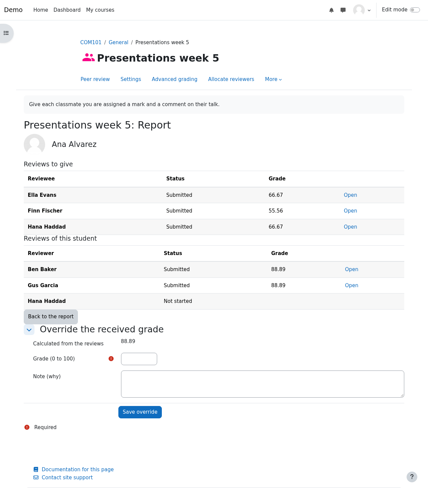
When ready the teacher presses Release feedback (the button then reads Hide feedback, so it can be undone) and Push grades to gradebook. Moodle confirms with “Grades were sent to the gradebook.”
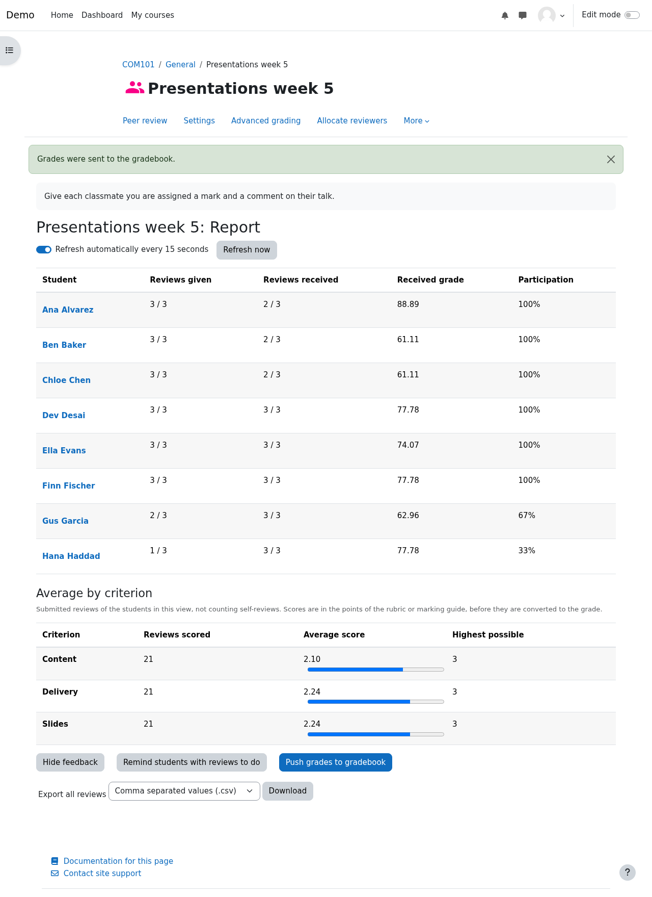
Under Feedback I received the student sees their grade and each review as “Anonymous” with a short comment. View details opens the rubric with the levels the reviewer chose highlighted, and the remarks.
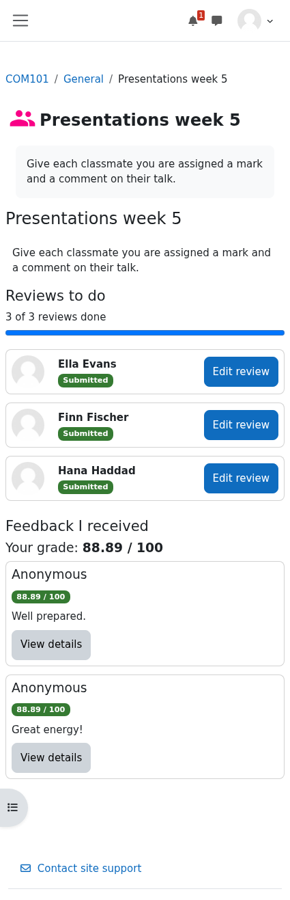
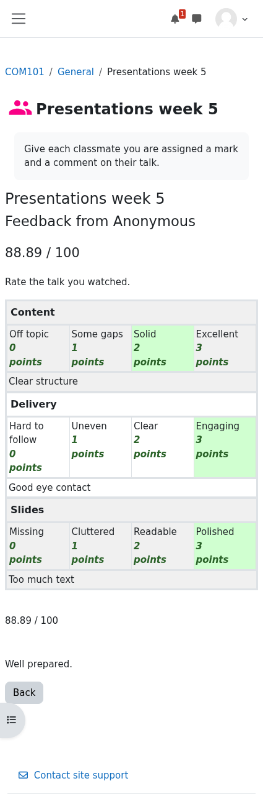
The received grade and the participation grade appear in the grader report as two grade items of the course.
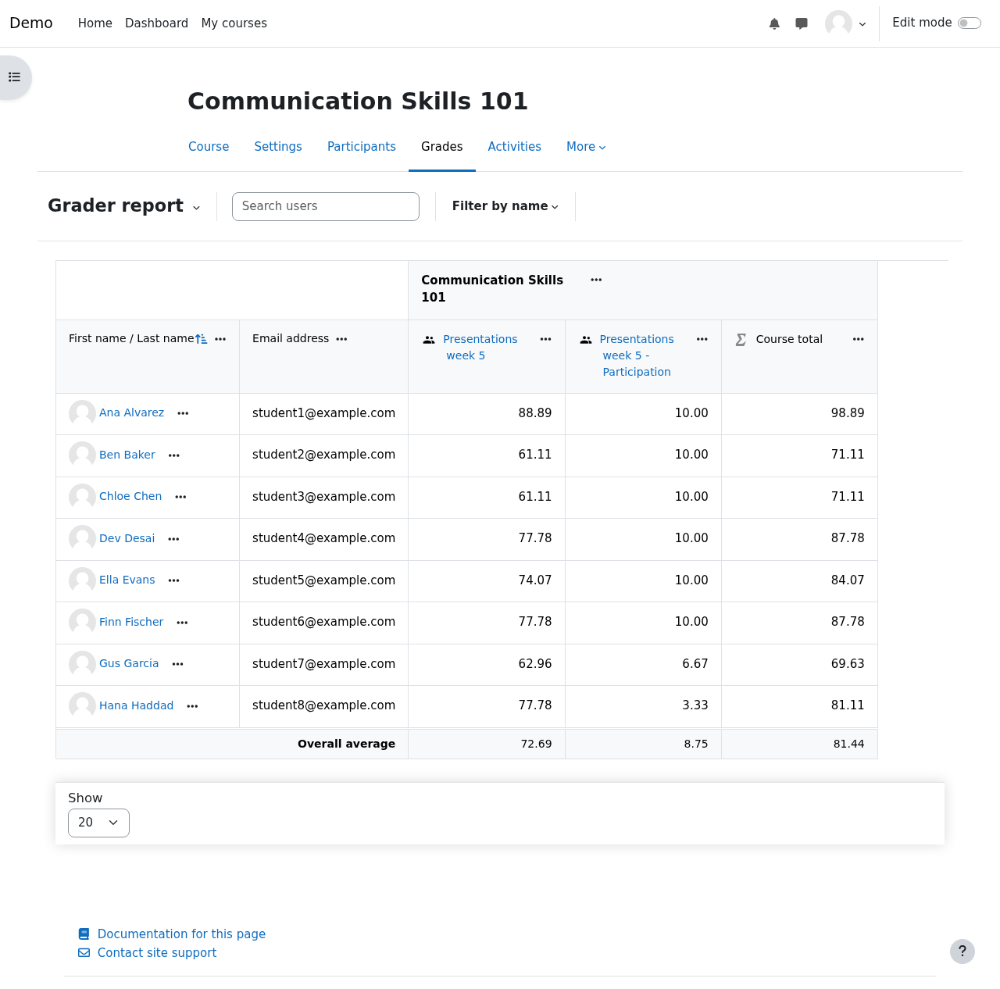